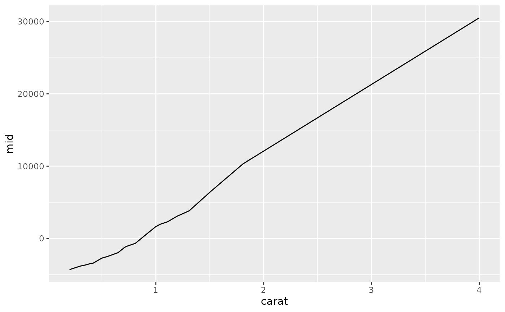
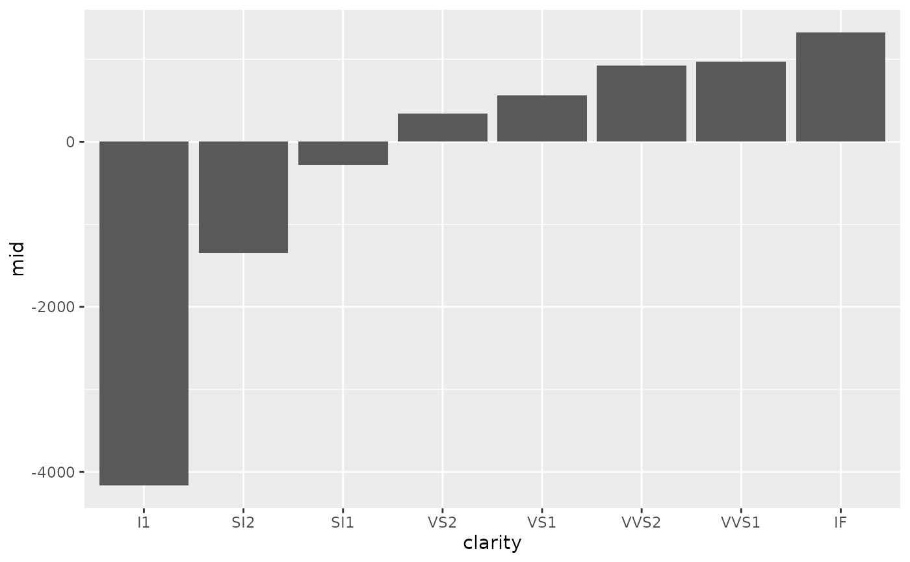
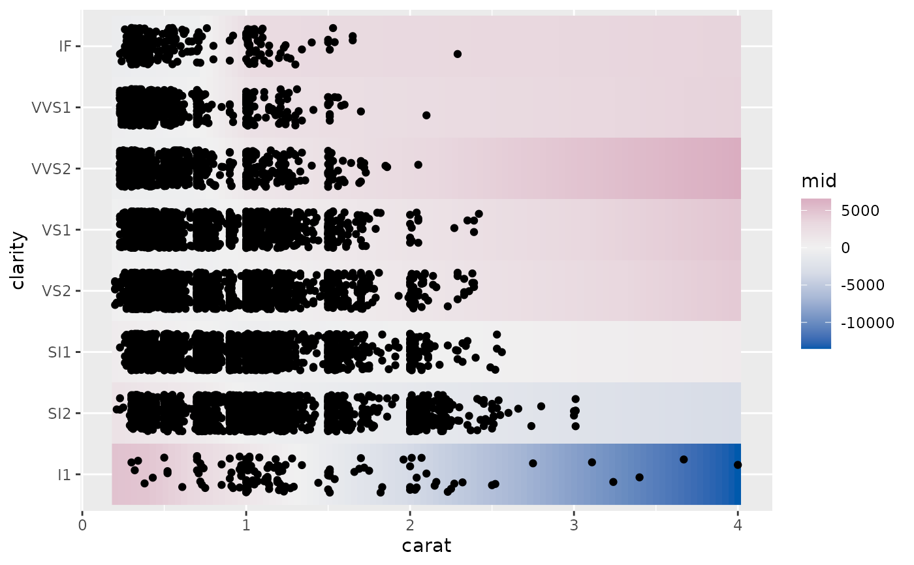
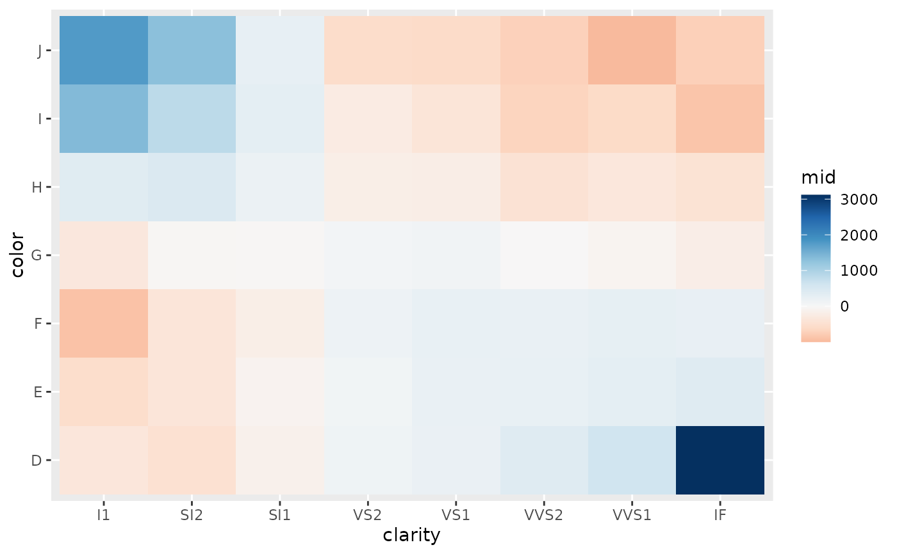

ggmid() is an S3 generic function for creating various visualizations from MID-related objects using ggplot2.
For "mid" objects (i.e., fitted MID models), it visualizes a single component function specified by the term argument.
Usage
ggmid(object, ...)
# S3 method for class 'mid'
ggmid(
object,
term,
type = c("effect", "data", "compound"),
theme = NULL,
intercept = FALSE,
main.effects = FALSE,
data = NULL,
limits = c(NA, NA),
jitter = 0.3,
resolution = c(100L, 100L),
lumped = TRUE,
...
)
# S3 method for class 'mid'
autoplot(object, ...)Arguments
- object
a "mid" object to be visualized.
- ...
optional parameters passed to the main plotting layer.
- term
a character string specifying the component function to be plotted.
- type
the plotting style. One of "effect", "data" or "compound".
- theme
a character string or object defining the color theme. See
color.themefor details.- intercept
logical. If
TRUE, the intercept is added to the MID values.- main.effects
logical. If
TRUE, main effects are included in the interaction plot.- data
a data frame to be plotted with the corresponding MID values. If not provided, data is automatically extracted based on the function call.
- limits
a numeric vector of length two specifying the limits of the plotting scale.
NAvalues are replaced by the minimum and/or maximum MID values.- jitter
a numeric value specifying the amount of jitter for the data points.
- resolution
an integer or vector of two integers specifying the resolution of the raster plot for interactions.
- lumped
logical. If
TRUE, uses the lumped factor levels; ifFALSE, uses the original levels from the data. AlwaysFALSEwhenmain.effects = TRUE.
Details
For "mid" objects, ggmid() creates a "ggplot" object that visualizes a component function of the fitted MID model.
The type argument controls the visualization style.
The default, type = "effect", plots the component function itself.
In this style, the plotting method is automatically selected based on the effect's type:
a line plot for quantitative main effects; a bar plot for qualitative main effects; and a raster plot for interactions.
The type = "data" option creates a scatter plot of data, colored by the values of the component function.
The type = "compound" option combines both approaches, plotting the component function alongside the data points.
Examples
data(diamonds, package = "ggplot2")
set.seed(42)
idx <- sample(nrow(diamonds), 1e4)
mid <- interpret(price ~ (carat + cut + color + clarity)^2, diamonds[idx, ])
#> 'model' not passed: response variable in 'data' is used
# Plot a quantitative main effect
ggmid(mid, "carat")

# Plot a qualitative main effect
ggmid(mid, "clarity")

# Plot an interaction effect with data points and a raster layer
ggmid(mid, "carat:clarity", type = "compound", data = diamonds[idx, ])

# Use a different color theme
ggmid(mid, "clarity:color", theme = "RdBu")
